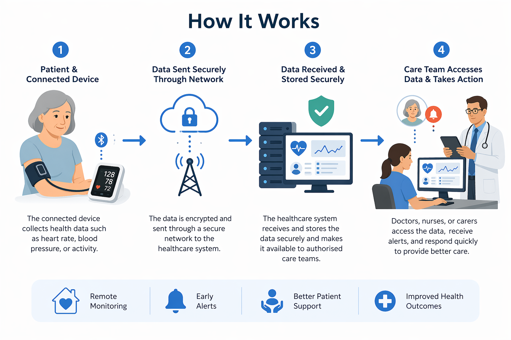

Smart healthcare is the integration of advanced technologies like the IoT, AI, and mobile internet into healthcare systems to improve patient care, monitoring, and treatment

IoT devices first collect data from patients or its surroundings then the data is sent to a centralized system or cloud using the networks or internet securely. The data is then processed and analyzed against medical records, healthcare databases and trained AI Algorithms to identify any potential health issues or patterns. If any serious concerns are found it will immediately send alerts to the patients and healthcare professionals.
Doctors, nurses, or carers can see the data and immediately take actions accordingly. This helps remote monitoring, early prevention and improved patient care.
| Device Type | Purpose | How It Works / Data Collected | Outcome / Benefit |
|---|---|---|---|
| Heart Monitor | Monitor heart activity | Records pulse and heart rhythm data | Provides early warning and monitoring |
| Glucose Sensor | Track sugar levels | Checks and sends blood sugar data | Improves diabetes care |
| Blood Pressure Device | Check blood pressure | Records readings and shares them digitally | Supports remote care and follow-up |
| Temperature Sensor | Check body temperature | Tracks temperature changes regularly | Identifies illness early |